1016C10 SINGLE CYLINDER HEAD - R.R. AND REPLACE GASKET
- Path
- Procedures > 10 ENGINE > 1016 CYLINDER HEAD/S > 1016C SINGLE CYLINDER HEAD > 1016C10 SINGLE CYLINDER HEAD - R.R. AND REPLACE GASKET
- Kind
- repair procedure (removal / refitting; the operation number is the code)
- Applies to
- engines: 2.2 JTS, 2.4 JTD 20v; all production periods
- Interactive page
- https://sloeber94.github.io/elrnDB-aBrrSpdr/en/#/946001816
Applies to: engines: 2.2 JTS; all production periods
 Removing
Removing
 Refitting
Refitting- Position the vehicle on a lift.
- Make sure that the ignition key is in the OFF position, then disconnect the battery terminal (-).
Description | Connector | |
|---|---|---|
- | Battery |
Op. 1048A34 HOSE(S) FROM FLOW METER TO AIR SUPPLY CAPACITY CASE - R + R
Op. 1056F17 THROTTLE BODY WITH DVL - R.R.
Op. 1072B50 AIR CHAMBER - R.R.
Op. 1072B54 HOSES CONNECTING AIR INTAKE CHAMBER TO INTAKE MANIFOLD(S) - R.R.
Op. 1072B21 AIR INTAKE FUEL MANIFOLD INTERGRATED DUCT R R AND REPLACE GASKET
Op. 1048A28 VACUUM AIR CIRCUIT RESONATOR PIPE - R+R
Op. 1072C43 EXHAUST MANIFOLD UPPER BULKHEAD R R
Op. 1072C42 EXHAUST MANIFOLD LOWER BULKHEAD R R
- Undo the radiator coolant drain plug.
- Loosen the band and disconnect the radiator lower coolant outlet hose, cylinder head side.
- Using a suitable syringe, draw off the power assisted steering fluid from the reservoir.
1. Undo the connector (1a) and disconnect the supply pipe from the pump to the power assisted steering box (1b), power assisted steering pump side.
2. Loosen the band and disconnect the power assisted steering fluid pipe from the reservoir to the pump, power assisted steering pump side.
3. Loosen the band and disconnect the power assisted steering fluid return pipe from the heat exchanger to the reservoir, reservoir side.
4. Undo the bolts (4a) and remove the power assisted steering fluid reservoir (4b) complete with pipe (4c).
5. Loosen the band and disconnect the coolant return pipe, cylinder head side.
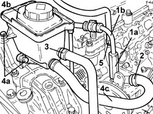
Applies to: engines: 2.2 JTS; all production periods
1. Disconnect the electrical connections (1a) and (1b) from the phase transformer electromagnets.
Description | Connector | |
|---|---|---|
1a | Exhaust side phase transformer solenoid valve |
Description | Connector | |
|---|---|---|
1b | Inlet side phase transformer solenoid valve |
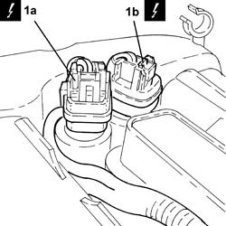
Applies to: engines: 2.2 JTS; all production periods
1. Disconnect the electrical connections (1a) and (1b) from the cam angle sensors.
Description | Connector | |
|---|---|---|
1a | Exhaust side timing sensor |
Description | Connector | |
|---|---|---|
1b | Inlet side timing sensor |
2. Disconnect the electrical connections from the electronic power module.
Description | Connector | |
|---|---|---|
2 | Ignition coil |
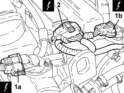
Applies to: engines: 2.2 JTS; all production periods
1. Disconnect the electrical connection from the engine coolant temperature sensor.
Description | Connector | |
|---|---|---|
1 | Engine coolant temperature sensor/sender unit |
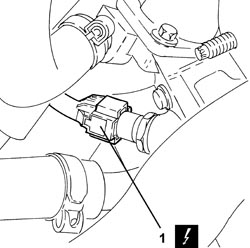
Applies to: engines: 2.2 JTS; all production periods
- Release the engine electrical wiring from the securing bands and move it aside.
- Discharge the fuel supply system pressure.
1. Disconnect the rapid connector for the fuel supply pipe, multiple connector side.
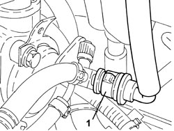
Applies to: engines: 2.2 JTS; all production periods
1. Undo the bolts (1a) and remove the electronic power module (1b).
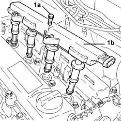
Applies to: engines: 2.2 JTS; all production periods
1. Undo the bolts (1a) and remove the tappet cover (1b) complete with gaskets.
2. Unscrew the timing system hydraulic tensioner and remove.
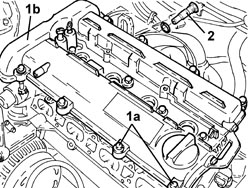
Applies to: engines: 2.2 JTS; all production periods
1. If no mark (1b) is present on the fixed timing chain hydraulic tensioner (1a), replace the tensioner with a new unit including a new mobile chain tensioner pad.
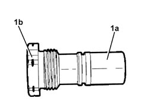
Applies to: engines: 2.2 JTS; all production periods
1. Undo the bolts (1a) and disconnect the intermediate exhaust pipe (1b), exhaust manifold side with the catalytic converter.
2. Undo the bolts fixing the exhaust manifold and the catalytic converter to the mounting bracket.
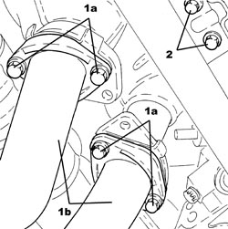
Applies to: engines: 2.2 JTS; all production periods
1. Undo the nuts (1a) and release the exhaust manifold and catalytic converter (1b) from the studs on the cylinder head.
- Remove the exhaust manifold and catalytic converter gasket.
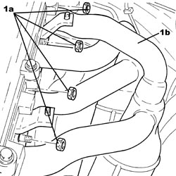
Applies to: engines: 2.2 JTS; all production periods
1. Undo the bolts (1a) and remove the phase transformer electromagnets (1b).
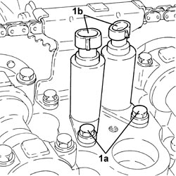
Applies to: engines: 2.2 JTS; all production periods
1. Undo the bolts (1a) and remove the upper timing chain tensioner pad (1b).
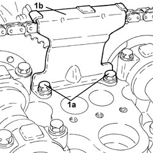
Applies to: engines: 2.2 JTS; all production periods
1. Support the engine using a hydraulic hoist fitted with suitable chains attached to the brackets on the actual engine.
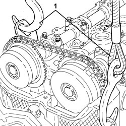
Applies to: engines: 2.2 JTS; all production periods
1. Undo the bolts (1a), (1b) and remove the flexible mounting for the power unit timing side front support (1c) complete with power assisted steering fluid reservoir mounting bracket (1d).
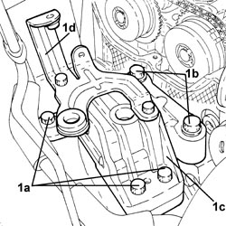
Applies to: engines: 2.2 JTS; all production periods
- Raise the engine as necessary using the hydraulic hoist.
1. Undo the access cap to the belt tensioner pad upper fixing bolt.
- Undo the upper fixed belt tensioner fixed pad fixing bolt.
2. Undo the bolt fixing the power assisted steering pump bracket to the cylinder head.
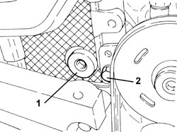
Applies to: engines: 2.2 JTS; all production periods
1. Undo the camshaft phase transformer fixing bolts.
2. Remove the phase transformers.
- Secure the timing chain appropriately.
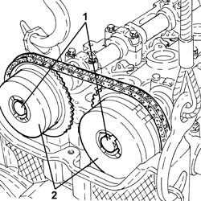
Applies to: engines: 2.2 JTS; all production periods
1. Place the timing side power unit front support flexible mounting (1a) in its housing complete with power assisted steering fluid reservoir mounting bracket (1b) and secure it tightening the bolts (1c) and (1d).
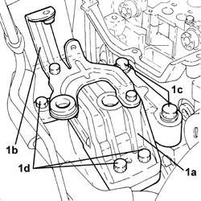
Applies to: engines: 2.2 JTS; all production periods
1. Undo the bolts securing the cylinder head to the engine crankcase.
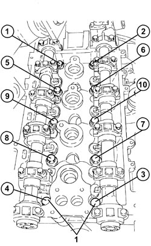
Applies to: engines: 2.2 JTS; all production periods
- Remove the cylinder head.
- Remove the cylinder head gasket.
Applies to: engines: 2.2 JTS; all production periods
Refitting
Removing- Clean any residues of gasket from the the cylinder head - engine block matching surfaces.
- Carry out a visual inspection of the components.
- The lower cylinder head plane can be refaced if the flatness is betweeb 0.05 and 0.15 mm.
- The refacing does not have to be carried out for lower flatness values.
- The refacing is not permitted for higher flatness values.
- Before refacing it is necessary to check that the minimum depth for each combustion chamber is 12.75 mm (at the point shown in the diagram) in order to guarantee the minimum combustion chamber volume.

Applies to: engines: 2.2 JTS; all production periods
- Place the cylinder head gasket in position.
- Place the cylinder head in position.
1. Tighten the cylinder head fixing bolts to the recommended torque using the angular tightening tool.
Component | Fastening | dia | Value (daNm) | Validity |
|---|---|---|---|---|
Cylinder head | Bolt | M11 | (engine block side) 2.7 - 3.3 + 100° + 65° | 1.9 JTS 2.2 JTS |
Tool | Description | Function | Validity |
|---|---|---|---|
1860942000 | Torque wrench | Tighten bolts to torque plus angle |
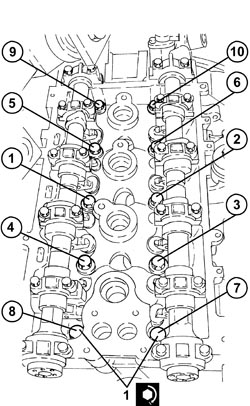
Applies to: engines: 2.2 JTS; all production periods
- Support the engine using a hydraulic hoist fitted with suitable chains attached to the brackets on the actual engine.
1. Undo the bolts (1a), (1b) and remove the flexible mounting for the power unit timing side front support (1c) complete with power assisted steering fluid reservoir mounting bracket (1d).
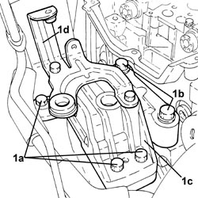
Applies to: engines: 2.2 JTS; all production periods
1. Tighten the bolt fixing the power assisted steering pump bracket to the cylinder head to the recommended torque.
Component | Fastening | dia | Value (daNm) | Validity |
|---|---|---|---|---|
Power assisted steering pump | Bolt | M8 | (cylinder head side) 1.9 - 2.1 | 1.9 JTS 2.2 JTS 3.2 JTS |
- Tighten the upper bolt fixing the fixed belt tensioner pad to the recommended torque.
Component | Fastening | dia | Value (daNm) | Validity |
|---|---|---|---|---|
Timing fixed chain tensioner pad | Upper bolt | M6 | (cylinder head side) 0.8 | 1.9 JTS 2.2 JTS |
2. Tighten the access cap to the belt tensioner pad upper fixing bolt to the recommended torque.
Component | Fastening | dia | Value (daNm) | Validity |
|---|---|---|---|---|
Cap for timing fixed chain tensioner pad upper bolt | - | M22 | 6.5 | 1.9 JTS 2.2 JTS |
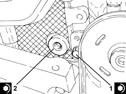
Applies to: engines: 2.2 JTS; all production periods
1. Place the timing side power unit front support flexible mounting (1a) in its housing complete with power assisted steering fluid reservoir mounting bracket (1b) and secure it tightening the bolts (1c) and (1d) to the recommended torque.
Component | Fastening | dia | Value (daNm) | Validity |
|---|---|---|---|---|
Timing side power unit rigid support flexible mounting | Bolt (to be replaced) | M12 | (rigid support side) 6.3 - 7.7 + 90° |
Component | Fastening | dia | Value (daNm) | Validity |
|---|---|---|---|---|
Timing side power unit rigid support flexible mounting | Bolt (to be replaced) | M12 | (bodyshell side) 6.3 - 7.7 + 90° |
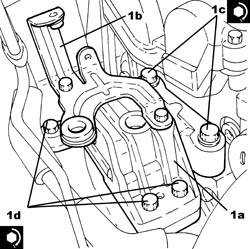
Applies to: engines: 2.2 JTS; all production periods
1. Place the inlet side camshaft phase transformer (1a) in its housing and secure it using a new bolt (1b) without tightening it.
2. If necessary, rotate the crankshaft until cylinder no. 4 is at T.D.C. in the explosion stroke; in this condition the reference (2a) on the inner part of the crankshaft pulley should be in line with the reference (2b) on the timing chain cover.
3. Fit the timing chain on the inlet side camshaft phase transformer.
4. Place the exhaust side camshaft phase transformer (4a) in its housing and secure it using a new bolt (4b) without tightening it.
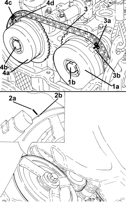
Applies to: engines: 2.2 JTS; all production periods
- Remove the hydraulic hoist fitted with suitable chains for supporting the engine.
1. Place the phase transformer electromagnets (1a) in their housings and secure them tightening the bolts (1b) to the recommended torque.
Component | Fastening | dia | Value (daNm) | Validity |
|---|---|---|---|---|
Phase transformer solenoids | Bolt | M6 | (cylinder head side) 1.0 | 1.9 JTS 2.2 JTS 3.2 JTS |
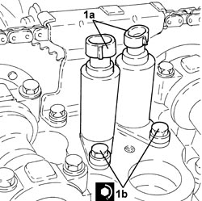
Applies to: engines: 2.2 JTS; all production periods
- The following drawing shows the fixed timing chain hydraulic tensioner disassembled.
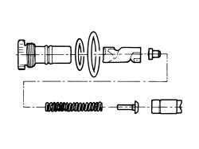
Applies to: engines: 2.2 JTS; all production periods
1. Tighten the bolts fixing the exhaust manifold and the catalytic converter to the mounting bracket.
2. Connect the intermediate exhaust pipe (2b), exhaust manifold side with the catalytic converter and tighten the bolts (2b) to the recommended torque.
Component | Fastening | dia | Value (daNm) | Validity |
|---|---|---|---|---|
Intermediate exhaust pipe with flexible section | Bolt | M8 | (exhaust manifold side with catalytic converter) 2.2 - 2.6 | 1.9 JTS 2.2 JTS |
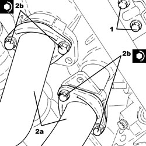
Applies to: engines: 2.2 JTS; all production periods
- Before it is possible to refit the timing fixed hydraulic tensioner it must be pre-loaded as described below.
1. Position the piston in a vice with protective jaws, holding it by the square end.
2. Insert the piston into the tensioner case by pressing and turning as shown in the figure until the pin (2a) fits into the groove (2b).
3. Press and simultaneously turn the piston until the pin (3a) fits into the groove (3b).
- Insert the assembled piston into the tensioner body.
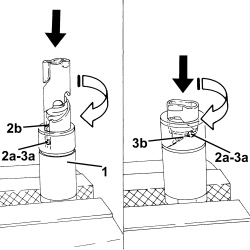
Applies to: engines: 2.2 JTS; all production periods
- Refit the timing chain hydraulic tensioner into its seat and tighten to the specified torque.
Component | Fastening | dia | Value (daNm) | Validity |
|---|---|---|---|---|
Fixed hydraulic timing system tensioner | - | M27 | 7.5 | 1.9 JTS 2.2 JTS |
Applies to: engines: 2.2 JTS; all production periods
1. Place the tappet cover (1a) complete with gaskets in its housing and secure it tightening the bolts (1b) to the recommended torque.
Component | Fastening | dia | Value (daNm) | Validity |
|---|---|---|---|---|
Tappet cover | Bolt | M6 | (cylinder head side) 0.7 - 0.9 | 1.9 JTS 2.2 JTS |
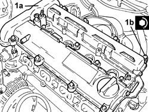
Applies to: engines: 2.2 JTS; all production periods
1. Move the timing chain hydraulic tensioner to operating position by exercising overall pressure by hand on the chain in the area shown in the figure. This puts the chain under tension, which in turn acts on the mobile pad to release the mobile tensioner piston.
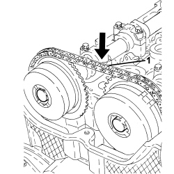
Applies to: engines: 2.2 JTS; all production periods
1. Place the electronic power module (1a) in its housing and secure it tightening the bolts (1b) to the recommended torque.
Component | Fastening | dia | Value (daNm) | Validity |
|---|---|---|---|---|
Ignition coil module | Bolt | M6 | (tappet cover side) 2.2 | 1.9 JTS 2.2 JTS |
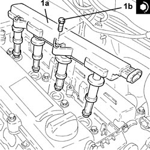
Applies to: engines: 2.2 JTS; all production periods
- Rotate the crankshaft through 720°, then place cylinder no. 4 at T.D.C. during the explosion stroke; in this condition the reference on the inner part of the crankshaft pulley should be aligned with the reference on the timing chain cover.
- Check the timing making sure that the timing references correspond.
1. Place the upper timing chain pad (1a) in its housing and fasten it tightening the bolts (1b) to the recommended torque.
Component | Fastening | dia | Value (daNm) | Validity |
|---|---|---|---|---|
Timing upper chain tensioner pad | Bolt | M6 | (cylinder head side) 1.0 | 1.9 JTS 2.2 JTS |
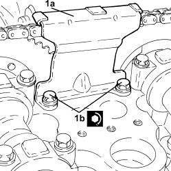
Applies to: engines: 2.2 JTS; all production periods
- Connect the rapid connector for the fuel supply pipe, multiple connector side.
- Place the engine electrical wiring in position and fasten it with the bands.
- Connect the electrical connection to the engine coolant temperature sensor.
- Connect the electrical connections to the electronic power module.
- Connect the electrical connections to the cam angle sensors.
- Connect the electrical connections to the phase transformer electromagnets.
- Connect the coolant return pipe, cylinder head side, and tighten the band.
- Place the power assisted steering fluid reservoir complete with pipe in its housing and secure it using the bolts.
- Connect the return pipe from the heat exchanger to the power assisted steering fluid reservoir, reservoir side and tighten the band.
- Connect the supply pipe from the fluid reservoir to the power assisted steering pump, power assisted steering pump side, and tighten the band.
- Connect the supply pipe from the pump to the power assisted steering box, power assisted steering pump side and tighten the connector to the recommended torque.
Component | Fastening | dia | Value (daNm) | Validity |
|---|---|---|---|---|
Supply pipe from pump to power assisted steering box | Connector | M16 | (power assisted steering pump side) 3.6 - 4.4 |
- Connect the radiator lower coolant inlet hose, cylinder head side, and tighten the band.
- Tighten the radiator coolant drain plug.
Op. 1072C42 EXHAUST MANIFOLD LOWER BULKHEAD R R
Op. 1072C43 EXHAUST MANIFOLD UPPER BULKHEAD R R
Op. 1048A28 VACUUM AIR CIRCUIT RESONATOR PIPE - R+R
Op. 1072B21 AIR INTAKE FUEL MANIFOLD INTERGRATED DUCT R R AND REPLACE GASKET
Op. 1072B54 HOSES CONNECTING AIR INTAKE CHAMBER TO INTAKE MANIFOLD(S) - R.R.
Op. 1072B50 AIR CHAMBER - R.R.
Op. 1056F17 THROTTLE BODY WITH DVL - R.R.
Op. 1048A34 HOSE(S) FROM FLOW METER TO AIR SUPPLY CAPACITY CASE - R + R
Op. 0010T20 ENGINE COOLANT - CHANGE
Op. 0010T71 POWER STEERING FLUID CHECK LEVEL AND TOP UP IF NECESSARY
Op. 0010T75 HYDRAULIC POWER STEERING SYSTEM BLEED AIR
- Connect the negative battery terminal.
- Remove the vehicle from the lift.
Applies to: engines: 2.4 JTD 20v; all production periods
- On this car, it is not possible to remove/refit the cylinder head on the car.
To perform this operation, remove/refit the power unit
Op. 1004B10 POWER UNIT WITH MANUAL GEARBOX - R.R
and then work at the bench, customising the engine service procedures for this operation.
Topics linked from this page (19)
- 0010T20 ENGINE COOLANT - CHANGE
- 0010T71 POWER STEERING FLUID CHECK LEVEL AND TOP UP IF NECESSARY
- 0010T75 HYDRAULIC POWER STEERING SYSTEM BLEED AIR
- 1004B10 POWER UNIT WITH MANUAL GEARBOX - R.R
- 1048A28 VACUUM AIR CIRCUIT RESONATOR PIPE - R+R
- 1048A34 HOSE(S) FROM FLOW METER TO AIR SUPPLY CAPACITY CASE - R + R
- 1056F17 THROTTLE BODY WITH DVL - R.R.
- 1072B21 AIR INTAKE FUEL MANIFOLD INTERGRATED DUCT R R AND REPLACE GASKET
- 1072B50 AIR CHAMBER - R.R.
- 1072B54 HOSES CONNECTING AIR INTAKE CHAMBER TO INTAKE MANIFOLD(S) - R.R.
- 1072C42 EXHAUST MANIFOLD LOWER BULKHEAD R R
- 1072C43 EXHAUST MANIFOLD UPPER BULKHEAD R R
- A001 BATTERY
- A030 IGNITION COIL
- K036 ENGINE COOLANT TEMPERATURE SENSOR/SENDER UNIT
- K106 INTAKE SIDE TIMING SENSOR
- K107 EXHAUST SIDE TIMING SENSOR
- N092 PHASE SHIFTER SOLENOID VALVE ON INTAKE SIDE
- N093 PHASE SHIFTER SOLENOID VALVE ON EXHAUST SIDE
Topics that link to this page (13)
- B010 ENGINE DOES NOT START (UNDER ANY CIRCUMSTANCES)
- B015 ENGINE DOES NOT START (STARTER MOTOR WORKING)
- D002 ENGINE NOT RUNNING SMOOTHLY / (LOSING POWER)
- D005 ENGINE DOES NOT PRODUCE BEST PERFORMANCE
- D010 ENGINE IDLE IRREGULAR
- D012 ENGINE IDLING TOO LOW
- S001 ENGINE KNOCK
- W011 EXCESSIVE EXHAUST FUMES
- X001 EXCESSIVE FUEL CONSUMPTION
- X005 EXCESSIVE OIL CONSUMPTION
- X008 ENGINE COOLANT CONSUMPTION
- X010 ENGINE COOLANT LEAKS
- 1028H10 CONNECTING ROD AND PISTON SET - R.R